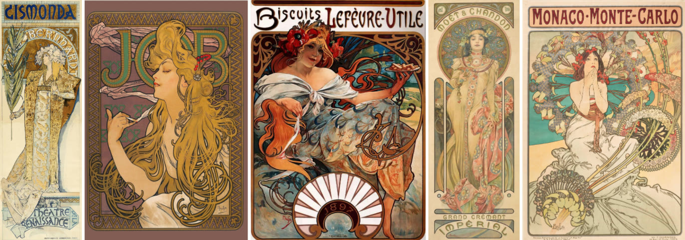
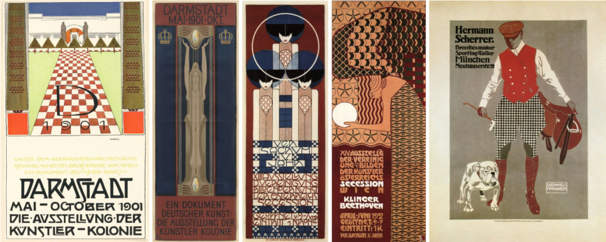
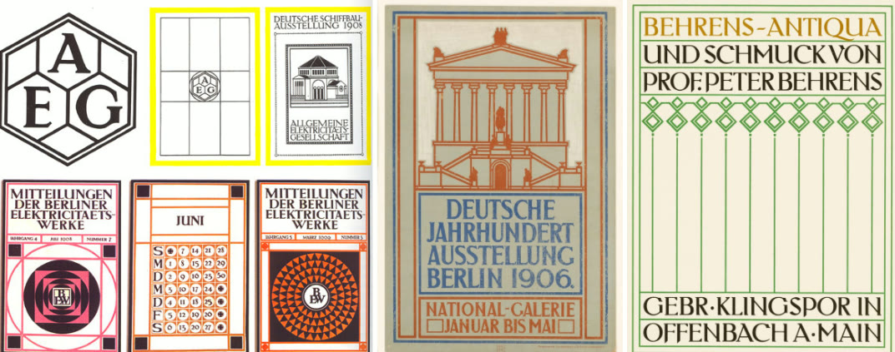
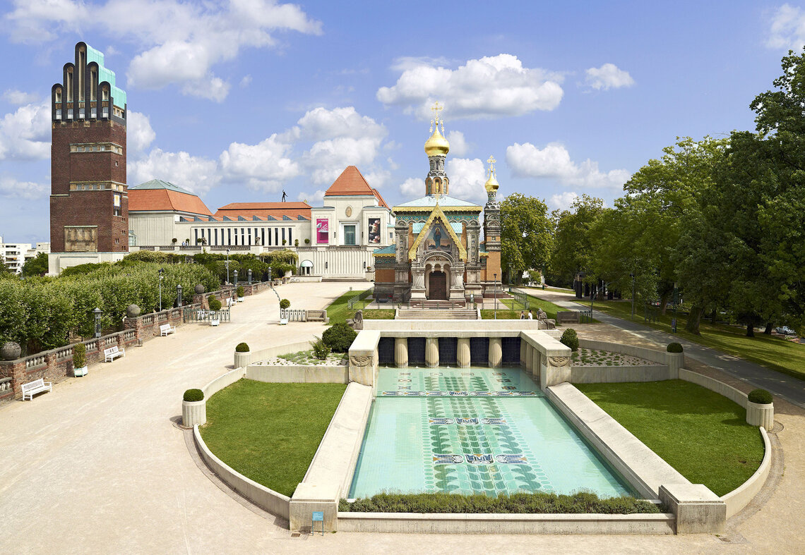

Edition of One
An AI-driven installation generating a unique, one-of-a-kind poster for each visitor.
LLM's on monitor. Bespoke installation created for the exhibition "A Step Ahead," celebrating the 125th year since the founding of the Mathildenhöhe colony. Revisiting the concepts of poster design then, and on the eve of, similar to back then, technological revolution, we reapproached the poster as one with its own intelligence. It observes the visitor, creating a fleeting poster about them — a reflection on the meaning of being perceived in our realities today, digital and physical. The era where we can instantly interact with the sum of written human knowledge and comedy can be made generatively.

In 1899, on the backdrop of mass industrialism and a world in transformation, Ernst Ludwig — brother of Rasputin's richest girlfriend — founded an artists' colony on Mathildenhöhe, inviting friends including Joseph Olbrich and Peter Behrens to imagine the future and unite art with everyday life. It became one of the defining centers of Jugendstil, German Art Nouveau's answer to a world remaking itself.
The colony announced itself through posters as much as buildings. Exhibition posters weren't just information — they carried the same holistic, art-for-life intention as the colony itself, and as printing techniques advanced, the posters shifted style era by era right alongside it.



Part of A Step Ahead, Mathildenhöhe Darmstadt — Exhibition Hall, 6 June 2026 – 31 January 2027.

A system of three engines, a vision, a literary, and an image generation robot observe and deconstruct the visitor to produce an instant poster about what they think the visitors are broadcasting about themselves. Sourcing on the LLM's vast knowledge, poster concepts are instantly created and displayed, with humor or poetry, attempting to tease or intrigue the visitor.
The project aims to celebrate the technology's beauty rather than the obvious and very present ominous side. AI can help us create. It can be realistically funny because the knowledge that the man will never find. But it needs a person to carry the wisdom.